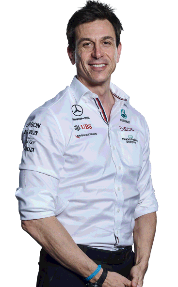
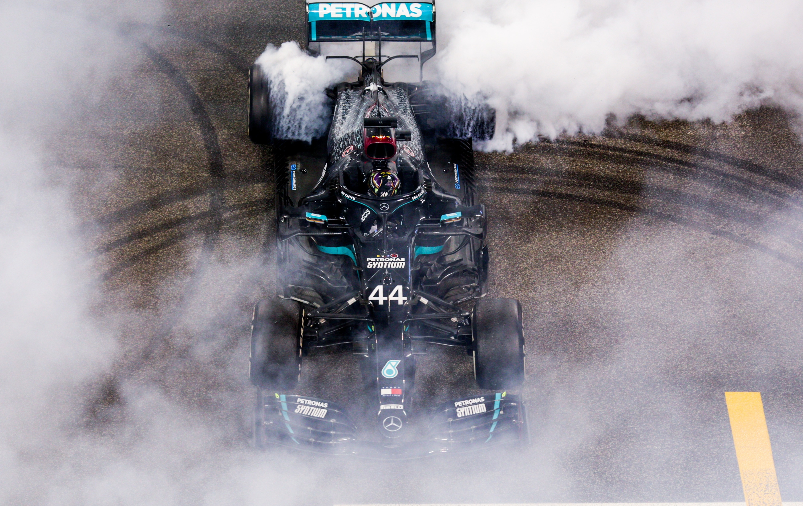

Mercedes

Mercedes "W12"

Lewis Hamilton
Briten, Sir Lewis Hamilton, er en av to mestvinnene formel 1 førere gjennom tidene sammen med Michael Schumacher. Hans første sesong med Mercedes var i 2013 da han tok over setet til nettopp Michael Schumacher. Siden da har Hamilton og Mercedes dominert sporten, med sin første verdensmestertittel i 2014 for laget har han vunnet alle tittlene siden med unntak av 2016 sesongen da lagkameraten Nico Rosberg slo han i sesongens siste løp.
Valtteri Bottas
Finnske Valtteri Bottas signerte for laget i 2017 etter fire å i Williams. Han har vært en solid andrefører i laget med 10 seiere, 51 palplaseringer, 17 "pole positions" og 16 raskeste runder for laget. Han har aldri nådd helt til toppen i sammendraget, men har to andreplasser fra 2019 og 2020. I 2022 kjører han for Alfa Romeo som erstatning for nedtrappende Kimi Räikkönen.


Toto Wolff
Torger Christian "Toto" Wolff er lagsjefen hos "Mercedes-AMG Petronas F1". Han hadde selv en lovende førerkarriære i den Østerriske ligaen før han bestemte seg for å heller satse på businessdelen av motorsport og bli sjef for Williams i 2012. Han ble sjef for Mercedes året etter og et år senere begynte perioden som er kjent som et lags største dominanse i Formel 1 historien. 7 år på rad har de nå vunnet begge mesterskapene hvor de blant annet i 2020 gruste all konkurranse og leverte en bil som slo RedBull sammenlagt med 254 poeng, noe som er en konstruktørs størte vinnemargin med Red Bulls 319 poeng på andreplassen.
